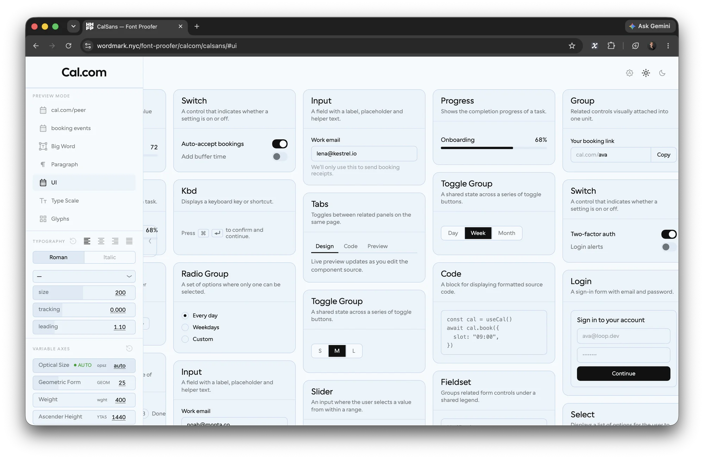

Twenty-four columns, a 3px line and one margin for every page — a standard the
way InDesign has one, not a convention. Text beside text shares a first baseline, a two-line label meets
its sample by its last line, a component moves whole. Everything on this page outside a stage is on it:
main is the .wm-lines root. Its columns are not yet: the page is still laid out
as the rail and a 1080px measure, so the sheets below show the columns rather than this page sitting on them. GRID.md
is the standard in words; grid.html is the bench it was cut on.
24. It halves, thirds, quarters, sixths and eighths, and calsans splits its sections 5:7 three times, which is 10 | 14 in whole columns. 12 below 1024, because the phone's count has to divide the desktop's: a half is still a half and a third still a third when the columns fold. The gutter is the pad scale's 24, 12 on a phone; the margin is the case study's, and it is everyone's. A card is a box on the columns and its contents step in one column and one gutter (rule A: the hanging version drew over its neighbours).
1440 · 24 columns of 28.6 · gutter 24 · margin 7vw, 100.8 · cards 10 | 14
900 · 12 columns of 42.5 · gutter 24 · margin 7vw, 63 · cards 5 | 7
390 · 12 columns of 18.2 · gutter 12 · margin 5vw, held at 20 · the cards stack, the inset stays one column + one gutter: 30.2
Fractional, the way 12/15 sits on a 3pt grid: the line is a unit every leading divides into,
not a leading itself. Body is 16/24, eight units, which 1.55 never was. Inside .wm-lines each
text block takes its leading from --lh and is nudged down by however far its first baseline
lands short of the next line — half the leading less the face, plus the ascent, with ascent and
descent rounded to whole pixels and an odd half-leading floored, because the browser does both. Cal Sans's
hhea is .9 / .245; a page on another face sets --font-asc and --font-desc.
Body copy is where the grid is decided. At 24 every line of a long paragraph lands on a line. At 24.8 the first line still does — the snapper puts it there — and each line after it falls another 0.8px behind, until by the fourth it sits a full unit off and the paragraph beside it no longer shares a single line with this one. The snapper moves first lines only, and on purpose: a leading that is not whole units is a fault in the stylesheet, and the lint and the CI spec both say so.
1. Set every lead in whole 3px lines. The line never changes, so a lead of 24, 27 or 48 is eight, nine or sixteen of it, and a block's later lines stay on the grid its first line was put on. A lead of 24.8 is on the line once and walks off by the second. Held by checks 2 and 3.
2. In a row of side-by-side text, take the smallest text lead as the row's step. The tiny lines next to the big lines are the row's macrogrid: a 12/24 caption beside a 45/48 headline gives the row a step of 24. Only text that wraps and is in a text role counts (body, lede, title, display). gridSnap measures the step and writes it on the row's items as --row-step. Held by check 11.
3. Size the big text so its lead is a whole multiple of the step; do not loosen a lead to make it fit. The homepage headline went from 36/39 to 45/48 beside a 24 caption, not to 36/48: a lead opened by a third looks spaced out, a size one token larger does not. Each headline line then lands on every other caption line. Held by check 10, a row shares its lines.
4. Keep one step of white around every line of the big text. Between its lines (a baseline to the next line's x-height), above the block (what precedes it ends one step above its first x-height) and below it (the next text's x-height sits one step under its last baseline). Cal Sans 600 at 45/48 has an x-height of 23.9px, measured from the pixels, so the white is 24.1: baselines on the step lines, x-heights on the half lines. As ratios, step = size × (lead ratio − x-height ratio) = 45 × (1.067 − .531) = 24.1; another face or size checks that fit before it is adopted. Held by check 12, text keeps one step of white.
5. Put rules, dots and folio marks on the step, counted from the shared first baseline. The homepage caption's rule and dot sit at −24, one caption line above the row's first baseline, written top: calc(-1 * var(--row-step, 24px)). A mark between steps reads as a slip beside type that is on them. Held by check 11, folio elements sit on the row step.
6. Set an eyebrow or a label on line 0 of its title, one lead above the first baseline, never nearer. With the big text sized to the step its x-height sits on a half line, so the safe area above a title is exactly one of its leads: −48 for 45/48. An eyebrow at −30 is inside it, 18px short. Held by check 12.
7. Let annotations and one-line blocks keep their own lead. Micro, label and ui text, and any block that runs to one line, share the row's first baseline and nothing after it. They are not part of the step, so a 9/12 note beside an 18/27 lede is no conflict.
8. Express the margins around big text in the row step, not in em. A headline's margin-top and margin-bottom are multiples of var(--row-step), or of its own lead, so what follows starts on the macrogrid. An em margin follows the size and lands between lines.
9. When a row's leads cannot divide, change the size, not the grid. Nothing at render rounds a lead; the check reports the row. The case study's hero, a lede at 39 beside a sub at 27, is the standing example, listed as a known offender until the hero is re-sized. Held by check 10.
type.css writes each leading as round(nearest, ratio em, var(--bl)): still em, so it
follows the reader's text size, and on the line at whatever size that is. The ratios moved to make it true
at the 16px root; display is 1.12, not 1.1, because 49.5 is a tie and round(nearest) takes a
tie up — one browser's rounding from off the line.
micro · 9 / 12 · 4 units
axis tags · metric rules · annotations
label · 12 / 15 · 5 units
Section labels
ui · 12 / 15 · 5 units
Twelve on fifteen: the print grid this one is modelled on. Labels, captions, the dial's words.
body · 16 / 24 · 8 units
Running copy. Two lines of it, so the second line can be seen landing where the first one did, eight units on.
lede · 18 / 27 · 9 units
The paragraph that opens a page.
title · 26 / 30 · 10 units
The leading, subdivided
display · 45 / 51 · 17 units
24 / 3
In a .wm-baselines container, items that start in one row have their first text block
moved to the lowest first baseline among them. An item marked data-baseline="last" meets the
row by its last line instead, so a two-line caption ends on the big word's baseline rather than hanging
below it. Only the block being aligned moves; the rest of each card keeps its own snap, so text set at the
bottom of a card stays on its line. A shift larger than the target's font-size is refused and reported
— that is a row that matched the wrong text, and once it pushed a paragraph 212px.
24
columns from 1024px
3px
the line
12 below 1024,
to divide 24.
Snap a label alone and it leaves the thing it labels. The pair below sits under a block that is off
the unit on purpose, so both rows start between lines and the snapper has to move something. On the
left it moves only the words, and the words slide off the pink line through the thumb. On the right the
row is a component, --snap-unit: 1, and it travels as one: words, track and thumb stay
level. Step the block above from 48 to 52px and watch which side walks.
label snapped alone
—
component moves whole
—
Stages keep their own room. A demo with type of its own — the sheets above, every chapter
on this page that draws its own specimens — is marked data-nosnap: the snapper skips it,
and so does grid.css, so a stage is never half on the line.
A page keeps its margin; a tool has none, ever. The homepage, the case study, Kernpare and the
opsz proofer are pages. font-proofer and ReCal are tools: .wm-grid--bleed on their
main drops the margin, the columns run edge to edge and the gutter stays, and a box that touches
the window holds its text one gutter in from it, never flush. A breaker is the page's way out of its
margin: .wm-break (or --left, --right) takes a box to the window edge and
keeps its words at the margin. A picture breaker, marked data-nosnap, is all box.
A macOS window screenshot carries its drop shadow as a transparent margin, so the window
sits inside the image and lands short of the columns. data-shot="mac" cuts the shadow out of
the layout: 112 / 112 / 76 / 148 capture px (left, right, top, bottom, at 2x), measured on the case study's
shots. It is a fixed size in points, not a ratio, so a file scaled after capture says by how much
(--shot-scale; the case study's 2000px files are .643). Below, the window's edges sit on the lines
of columns 11 and 24.
A breaker: the ground meets the window, the words stay on the margin..wm-break · padding-inline is the margin it took back
The window, not the image, on the columns.data-shot="mac" · --shot-scale: .643 · columns 11 to 24

1440, a page · margin 100.8 · a breaker strip, a text breaker, and a window screenshot whose edges meet columns 11 and 24
Railcolumn 1: one gutter in from the window
Inspectorcolumn 24: one gutter from the right
.wm-grid--bleed: no margin, ever — but never flush.
1440, a tool · .wm-grid--bleed · columns of 37 to the window's edges · text one gutter (24) in where a box touches an edge